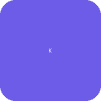

Updated March 2026 | Reviewed by WiseIQ Editorial Team
Financial decisions made with complete information consistently outperform those made under pressure or with incomplete data. Take time to compare at least 3 options before committing.
Building credit can be a challenging journey, especially for those starting from scratch or recovering from past financial difficulties. Kovo Credit presents itself as a solution, offering a credit-building subscription service designed to help users establish or improve their credit scores. But with so many options available, a crucial question arises: is Kovo Credit legit? This comprehensive 2026 review delves into how Kovo works, what it reports to credit bureaus, its advantages and disadvantages, and how it stacks up against popular alternatives like Self and Kikoff, to help you determine if it's the right tool for your credit-building goals.
What is Kovo Credit?
Kovo Credit is a subscription-based service aimed at helping individuals build a positive credit history. For a monthly fee, typically around $10, subscribers gain access to financial literacy courses and, more importantly, have their payment history reported to major credit bureaus. Unlike traditional loans or secured credit cards, Kovo doesn't involve borrowing actual money or requiring a security deposit. Instead, it leverages your consistent subscription payments as a demonstration of financial responsibility, which can positively impact your credit score over time.
How Kovo Works to Build Your Credit
The mechanism behind Kovo's credit building is straightforward. When you sign up for Kovo, you commit to a monthly subscription payment. Kovo then reports these on-time payments to select credit bureaus. Here's a breakdown of the process:
- Subscription Payment: You pay a recurring monthly fee (e.g., $10).
- Financial Education: You get access to educational resources designed to improve your financial knowledge.
- Credit Reporting: Kovo reports your consistent, on-time payments to credit bureaus, specifically Equifax and TransUnion. This creates a positive payment history entry on your credit report.
- Credit Score Impact: As positive payment history is a significant factor in credit scoring models, these reports can help build or improve your credit score.
It's important to understand that Kovo is not a loan. You are not borrowing money, and there's no interest to pay. You are essentially paying for a service that reports your payment behavior to credit bureaus.
Pros and Cons of Using Kovo Credit
Like any financial product or service, Kovo Credit comes with its own set of advantages and disadvantages. Understanding these can help you make an informed decision.
Pros of Kovo Credit:
- No Hard Inquiry: Signing up for Kovo typically does not involve a hard credit inquiry, which means your credit score won't take a temporary dip. This is a significant advantage for those with limited or poor credit.
- No Credit Check Required: Kovo does not require a credit check for enrollment, making it accessible to almost anyone, regardless of their current credit standing.
- Low Cost: The monthly subscription fee is relatively low, making it an affordable option for many individuals looking to build credit without a large financial commitment.
- Simplicity: The process is simple and easy to understand. You pay your subscription, and Kovo handles the reporting.
- Financial Education: Access to educational content can be beneficial for improving overall financial literacy.
Cons of Kovo Credit:
- Reports to Only Two Bureaus: Kovo primarily reports to Equifax and TransUnion. It does not consistently report to Experian, which means your credit-building efforts might not be fully reflected across all three major credit bureaus.
- Slow Credit Building: While effective, building credit with Kovo can be a slow process. It relies on consistent, long-term payments to gradually establish a positive history.
- No Actual Loan: For those who need to demonstrate the ability to manage traditional credit (like installment loans), Kovo doesn't provide that experience. It's a subscription service, not a loan product.
- Subscription Fee: While low, it's still a recurring expense. If you miss payments, it could negatively impact your credit, defeating the purpose.
- Limited Impact on Credit Mix: Kovo contributes to your payment history but doesn't diversify your credit mix (e.g., revolving credit vs. installment loans), which is another factor in credit scoring.
See who actually approves your score range — and the APR to expect.
Kovo vs. Alternatives: Self, Kikoff, and MoneyLion
To truly understand Kovo's value, it's helpful to compare it with other popular credit-building services. Here's a comparison with Self, Kikoff, and MoneyLion Credit Builder Plus:
KCKovo Credit
- Type: Subscription service
- Cost: ~$10/month
- Reports to: Equifax, TransUnion
- Key Feature: Reports subscription payments as credit history.
- Pros: No hard inquiry, no credit check, low cost.
- Cons: Only 2 bureaus, slow building, no actual loan.
 Self Credit Builder Account
Self Credit Builder Account
- Type: Credit Builder Loan
- Cost: Monthly payments + administrative fee
- Reports to: Equifax, Experian, TransUnion
- Key Feature: You save money while building credit; funds are released at the end.
- Pros: Reports to all 3 bureaus, builds savings, acts as an installment loan.
- Cons: Higher monthly commitment, administrative fees.

Kikoff Credit Account- Type: Revolving Credit Line
- Cost: $5/month for Credit Builder, optional $10/month for Credit Account
- Reports to: Equifax, Experian (Credit Account reports to all 3)
- Key Feature: Small credit line for exclusive store purchases, reports payments.
- Pros: Low cost, reports to 2-3 bureaus, helps establish revolving credit.
- Cons: Very small credit line, limited utility for purchases.
MCBMoneyLion Credit Builder Plus
- Type: Credit Builder Loan + Banking
- Cost: $19.99/month
- Reports to: Equifax, Experian, TransUnion
- Key Feature: Instant loan access, credit builder loan, and banking features.
- Pros: Fast credit building, reports to all 3 bureaus, includes banking.
- Cons: Higher monthly fee, requires a MoneyLion checking account.
Who Should Use Kovo Credit?
Kovo Credit can be a suitable option for specific individuals looking to improve their credit profile:
- Credit Newcomers: If you have no credit history at all, Kovo can help you establish your first positive entries on your credit report.
- Those with Poor Credit: If you're recovering from past financial mistakes and have a low credit score, Kovo offers a low-risk way to add positive payment history without a hard inquiry.
- Budget-Conscious Individuals: With its low monthly fee, Kovo is an affordable entry point into credit building compared to some other options that require larger deposits or higher monthly payments.
- Individuals Seeking Simplicity: If you prefer a straightforward, hands-off approach to credit building without the complexities of managing a loan or a secured card, Kovo fits the bill.
- Those Focused on Payment History: If your primary goal is to demonstrate consistent on-time payments, Kovo directly addresses this aspect of credit scoring.
However, if you need to build a diverse credit mix, access actual credit, or see faster results across all three bureaus, you might consider Kovo as a supplementary tool or explore alternatives like secured credit cards or credit builder loans that report to all three bureaus.
- Borrowers who want the absolute lowest rate available — Kovo is not always the cheapest option for borrowers with excellent credit (720+). Compare with SoFi and LightStream if your score is above 720.
- Borrowers who need a co-signer — most online lenders, including Kovo, do not accept co-signers on personal loans.
- Borrowers in states where Kovo is not licensed — verify availability in your state before applying.